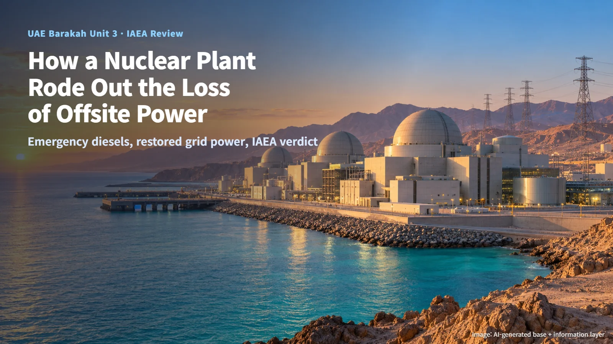
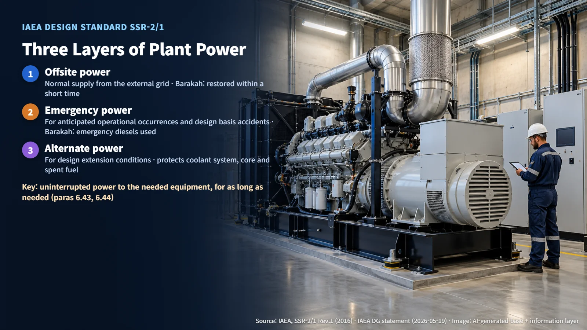

UAE · Nuclear Safety
How a Nuclear Plant Rides Out the Loss of Offsite Power: The IAEA's Review of Barakah Unit 3
After a May drone strike cut offsite power to Barakah Unit 3, emergency diesels kept it supplied, and an IAEA team has now judged the response effective.
Hearing that a nuclear power plant "lost power" can sound alarming. A nuclear plant generates electricity, yet it also needs a steady supply of electricity to keep itself safe. In May 2026, Unit 3 of the Barakah nuclear power plant in the UAE went through exactly that situation, and on October 20 the IAEA (International Atomic Energy Agency) published its assessment of how the event was handled. The IAEA's conclusion: the response of the UAE and the plant was effective. Following this case step by step shows what keeps a nuclear plant safe when the outside grid goes away.

May 17: It Started at a Generator Outside the Plant
According to the statement the IAEA Director General gave to the United Nations Security Council on May 19, a drone strike on the morning of May 17 set fire to an electrical generator located outside the plant's inner perimeter. As a result, Unit 3 lost its offsite power, meaning the electricity it normally receives from the external grid.
At that point, emergency diesel generators supplied power to Unit 3. At the time of the statement, radiation levels at the plant were normal and no injuries had been reported. The same statement said offsite power had been restored, and the IAEA's October announcement described this as a successful restoration within a short time.
Detailed records, such as the exact times power was lost and restored, which loads the emergency supply carried, the switchover time and how long the fuel would last, have not been disclosed. These items remain to be confirmed from the plant's operating records.
Offsite, Emergency and Alternate Power: Three Layers of Electricity
A nuclear plant must keep running the equipment that cools the reactor and monitors its condition, so it needs electricity continuously. For that reason, the IAEA design safety standard SSR-2/1 requires several layers of power supply.
The first layer is offsite power, received from the external grid in normal operation. The second, emergency power, supplies the electricity needed for anticipated operational occurrences (abnormal events that can be expected during operation) and design basis accidents (accidents the plant is designed from the outset to withstand). The third, alternate power, covers design extension conditions, that is, situations that go beyond design basis accidents. If offsite and emergency power are lost together, alternate power supplies the electricity needed to maintain the integrity of the reactor coolant system and to protect the core and the spent fuel.
Think of a house with utility power, a backup generator, and one more reserve source to bring out if even that generator stops. What this standard emphasizes is less the number of generators and more the ability to deliver uninterrupted power to the equipment that needs it, for as long as it is needed. Paragraph 6.43 calls for capability, availability, duration, capacity and continuity, and paragraph 6.44 calls for reliability and testability suited to the safety systems. The publicly confirmed response at Barakah used the second layer, the emergency diesels, and then restored the first layer, offsite power.

What the IAEA Team Found: Achievements and Three Recommendations
A follow-up mission was agreed during IAEA Director General Grossi's visit in June, and at the UAE's request a six-member IAEA team was on site from October 12 to 20. The team toured the affected areas and key emergency response facilities, reviewed operating and emergency procedures, and met senior management and technical staff of the operator, ENEC Operations, as well as the UAE Federal Authority for Nuclear Regulation (FANR). The review covered the plant's response, the national emergency preparedness and response arrangements, lessons from the event, and the operator's measures to ensure safety.
The achievements the team recognized were prompt notification at home and abroad, execution of emergency procedures and communication with the public, restoration of offsite power, regulatory oversight, and strengthened safety procedures, operator training and resilience of critical infrastructure. The technical competence of FANR, the plant's operating staff and the national grid's field personnel was also recognized.
The recommendations fall into three areas: strengthening emergency preparedness and response, strengthening infrastructure reliability and resilience, and strengthening stakeholder coordination to integrate safety and security. Reliability here means that a function works properly when it is needed; resilience means the ability to maintain and recover functions during a disruption. Safety is about preventing and mitigating accidents, while security is about responding to malicious acts, so in an emergency the two organizations may be working at the same time. Article 19, paragraph 12 of the FANR regulation requires emergency response, nuclear security and safeguards to be coordinated so that they support each other and remain free of conflict. The detailed assessment report and deadlines for individual actions have not been published, and a further follow-up mission will be considered in the future.
Next Step: Locking In the Lessons Through Exercises
The IAEA encouraged the operator and FANR to continue their technical and organizational improvement measures. In the end, the effect of those improvements shows up in exercises. Article 23 of the FANR regulation requires an exercise at least every two years with broad participation from on-site and off-site organizations, and over eight years the exercises must cover the assumed scenarios and all functions and organizations set out in the regulation. After the results are reviewed, retraining or revisions to the emergency plan follow, and the outcome is reported to the regulator.
Article 22 requires timely and accurate automatic transmission of plant parameters important to safety, and quarterly testing of the backup means used if the transmission system fails. These intervals come from the general regulation; individual action schedules for this event have not been disclosed.
The moment a nuclear plant loses offsite power, it switches to the next layer of electricity prepared in advance, and whether that switch worked properly is checked again through an international review. The real substance of nuclear safety lies less in the power loss itself than in the verification and training that follow it.